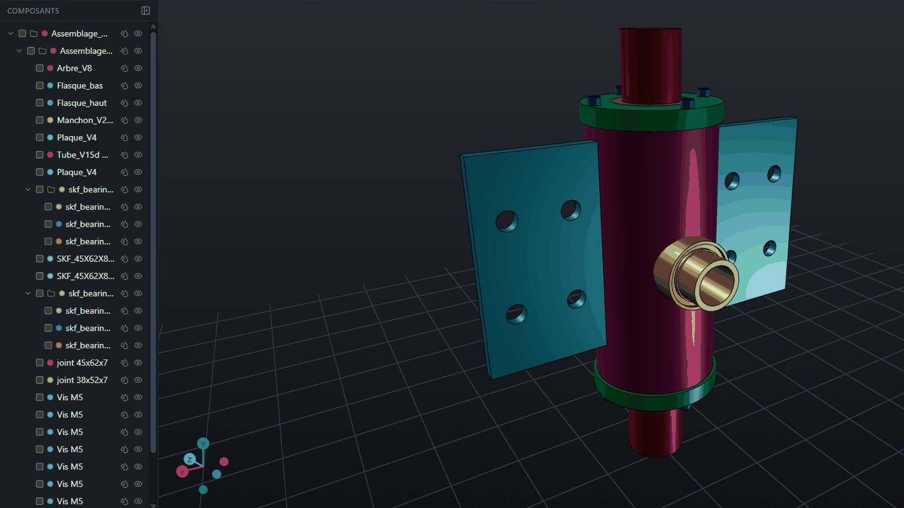

6 modes d'affichage
Ombré avec arêtes, ombré, filaire, lignes cachées visibles ou supprimées, rendu réaliste : lisez chaque pièce comme il vous convient (touches 1 à 6).
Ouvrez vos fichiers STEP, IGES, BREP, STL, OBJ, 3DXML ou DXF, mesurez, coupez, éclatez, détectez les collisions et présentez vos projets, directement sur votre PC, sans connexion internet.
14 jours avec toutes les fonctions, puis visualisation seule tant qu'aucune licence n'est activée · Paiement unique · Windows 10/11


Voyez votre modèle sous tous les angles, comme dans un logiciel de CAO.

Ombré avec arêtes, ombré, filaire, lignes cachées visibles ou supprimées, rendu réaliste : lisez chaque pièce comme il vous convient (touches 1 à 6).
Face, arrière, gauche, droite, dessus, dessous et isométrique en un clic, avec la vue en cours repérée sur la barre.
Sélectionner, translater, faire tourner, zoomer, zoom fenêtre et zoom ajusté pour recadrer tout le modèle d'un coup (touche Z).
Sélectionnez d'un seul geste toutes les pièces d'une zone.
Coupez selon X, Y ou Z, au curseur ou à la position tapée en mm : la section est remplie, pour voir l'intérieur de vos pièces.
Retrouvez chaque pièce : sélectionnez-la, masquez-la, changez sa couleur ou son opacité, renommez-la d'un double-clic.
Revenez à la vue de départ, ou annulez toutes vos modifications pour repartir du modèle tel qu'à l'ouverture.
Affichez la vue 3D seule pour présenter votre modèle proprement.
Relevez les dimensions et commentez le modèle sans quitter l'écran.

Survolez une arête ou une face : longueur, diamètre et rayon, aire. Épinglez plusieurs mesures, mesurez entre deux éléments (distance minimale, entre-axes, faces parallèles, angles) ou point à point avec accrochage.
Cliquez une arête pour afficher sa longueur, deux arêtes pour leur écart, un bord de trou pour son diamètre.
Encombrement, diamètres, entraxes, épaisseurs, volume et surface générés en un clic.
Posez des repères textuels sur le modèle ; ils sont enregistrés avec votre projet.
Réglez l'apparence pour mieux lire, comparer et présenter.
Affichez ou masquez la grille posée sous la pièce (touche G).
Rendez tout l'assemblage transparent pour voir à travers les pièces, ou réglez l'opacité pièce par pièce.
Choisissez une couleur et peignez directement les pièces.
Une couleur par pièce (les pièces identiques partagent la même) ; sur une pièce seule, une couleur par face pour mieux lire sa forme.
Retirez d'un clic les couleurs posées à la main.
Tirez de nouvelles couleurs au hasard jusqu'à ce que le résultat vous plaise.
Réglez l'éclairage (intensité, direction, teinte, lumières d'ambiance) et la position de la caméra.
Mode classique, mode jour ou mode nuit, selon votre poste de travail et votre éclairage.
Comprenez comment vos pièces s'assemblent et se déplacent.
Éclatement radial, axial (X, Y, Z), par sous-ensembles ou pas à pas, avec curseur et lignes-guides.
Éclatement animé, montage pas à pas (et démontage), rotation 360° et mode présentation, avec durée, vitesse, boucle et courbe adoucie réglables.
Enregistrez l'animation en vidéo MP4 (H.264) ou WebM : 16/9 (1920×1080) ou vertical 9/16 pour Instagram et TikTok, 30 ou 60 images/s, avec cadre de prévisualisation, fond dégradé et petit logo.
Analyse précise des interférences : arbre dans alésage mesuré au micron (jeu ou serrage au diamètre), volume d'intersection exact des autres pièces, jeux insuffisants, contacts et filetages classés à part. Calcul en arrière-plan, zoom sur chaque zone, rapport PDF et CSV. Déplacez aussi une pièce : elle s'arrête net au premier contact.
Regroupez des pièces sous un nom : le groupe se sélectionne et se déplace comme un seul bloc.
Rotation continue, rotation par angle, translation (aller simple ou yoyo) et présentation tournante, pour montrer le fonctionnement d'un mécanisme.
Animez et pilotez votre modèle.
Illustrez la circulation d'un fluide dans votre assemblage : cliquez un alésage et le circuit se crée tout seul le long de son axe. Six fluides (eau, air, huile, gaz, vapeur, chaud / froid), plusieurs circuits, repères Entrée / Sortie, étiquettes libres, légende automatique et export vidéo MP4. Illustration de principe, pas une simulation numérique.
Pilotez la vue par de simples phrases (« éclate à 50 % », « cache les vis », « mets le tube en rouge »). Fonctionne sur votre PC, sans compte ni connexion.
Ouvrez vos fichiers tels quels et sortez des documents prêts à partager.
STEP, IGES, BREP, STL, OBJ, 3DXML et DXF, par glisser-déposer, par le bouton Ouvrir ou, avec la version installée, d'un double-clic dans l'explorateur Windows. Les fichiers natifs (SLDPRT, CATPart, IPT…) s'ouvrent si SOLIDWORKS est installé et ouvert sur le même ordinateur ; sinon, exportez-les en STEP.
Choisissez Standard, Fin ou Très précis ; un modèle déjà ouvert se rouvre presque instantanément grâce au cache.
Enregistrez vue, mesures, annotations, couleurs et coupe dans un fichier autonome qui contient le fichier source.
Un PDF avec logo, quatre vues 3D, tableau de dimensions, mesures et annotations.
Image haute résolution de la vue en cours, avec fond transparent en option.
Choisissez votre imprimante (ou un plateau personnalisé), mettez à l'échelle, posez à plat et découpez en tronçons : l'aperçu plateau montre en vert ce qui tient et en rouge ce qui dépasse. Export STL, 3MF ou OBJ en millimètres, avec emboîtement par alvéoles et broches en option.
Les formats natifs (SLDPRT, SLDASM, CATPart, IPT, etc.) s'ouvrent si SOLIDWORKS est installé et ouvert sur le même ordinateur : il les convertit en STEP pour PindiCADViewer. Sinon, exportez-les en STEP depuis le logiciel d'origine.
49 € TTC — TVA non applicable, art. 293 B du CGI.
Après le paiement, votre licence vous est envoyée automatiquement par e-mail (vérifiez vos courriers indésirables).
Essai gratuit 14 joursInstallateur et version portable
14 jours avec toutes les fonctions, puis visualisation seule tant qu'aucune licence n'est activée.
Guide d'utilisation (PDF) — tout le logiciel expliqué pas à pas.
Après le paiement, votre licence vous est envoyée automatiquement par e-mail, en principe en quelques minutes (vérifiez vos courriers indésirables). L'e-mail contient votre clé et le fichier .pcvlic ; l'installeur se télécharge depuis cette page. Sans nouvelle sous 24 h, écrivez à contact@pindiconcept.fr.
Deux versions Windows : l'installeur classique, et une version portable qui ne demande aucune installation (à garder sur une clé USB, par exemple).
Oui. Au premier lancement, « Commencer l'essai gratuit de 14 jours » donne accès à toutes les fonctions, sans carte bancaire. Ensuite, le logiciel reste utilisable en visualisation seule (ouvrir et regarder vos modèles) jusqu'à l'activation d'une licence.
Non, Windows uniquement pour l'instant.
Non. Vos fichiers CAO sont ouverts et traités uniquement sur votre ordinateur. Le logiciel ne contient aucune télémétrie et ne recherche pas de mises à jour automatiquement. L'assistant IA fonctionne lui aussi sur votre PC, sans connexion, et la licence se vérifie hors ligne, sans identifiant matériel. Seule exception : une fois la licence activée, le logiciel vérifie au plus une fois par jour qu'elle n'a pas été désactivée (après un remboursement ou une contestation du paiement), en n'envoyant que le numéro de licence et la version ; sans connexion, il fonctionne normalement.
Au premier lancement, cliquez sur « J'ai une licence » (ou, plus tard, menu Aide › Licence…) et collez votre clé de licence, ou choisissez le fichier .pcvlic reçu avec « Importer un fichier de licence ». Avec la version installée, un double-clic sur le fichier .pcvlic suffit. L'activation fonctionne sans internet et débloque tout aussitôt.
La licence est personnelle : vous pouvez l'installer sur 2 ordinateurs qui vous appartiennent au maximum. Elle couvre toutes les versions 1.x du logiciel.
Oui, si SOLIDWORKS est installé et ouvert sur le même ordinateur : PindiCADViewer lui fait convertir le fichier natif (SOLIDWORKS, CATIA V5, Inventor, Parasolid, Creo, NX, Solid Edge…) en STEP, puis l'affiche. Sans SOLIDWORKS, exportez le fichier en STEP depuis le logiciel d'origine ; les formats STEP, IGES, BREP, STL, OBJ, 3DXML et DXF s'ouvrent sans autre logiciel.
Le logiciel étant livré immédiatement en téléchargement, le droit de rétractation légal ne s'applique pas lorsque vous avez expressément demandé la livraison immédiate et renoncé à ce droit au moment du paiement (article L221-28, 13° du Code de la consommation). En geste commercial, nous vous remboursons sur simple demande dans les 14 jours suivant l'achat si un problème technique empêche l'utilisation du logiciel et que nous ne parvenons pas à le résoudre. Détails : conditions générales de vente (article 6).
Oui : le guide d'utilisation (PDF) décrit pas à pas l'installation, l'activation, l'ouverture des fichiers, la navigation, les mesures, le plan de coupe, les assemblages, l'impression 3D et les exports. Le même guide s'ouvre dans le logiciel avec la touche F1.
Consultez le guide d'utilisation (PDF) : il est aussi intégré au logiciel (touche F1, ou menu Aide › Guide d'utilisation). Pour toute autre question, écrivez-nous à contact@pindiconcept.fr.